Fábrica9/10/11: cenas inteiras e exportação nativa Candidatos autorais. O mapa inteiro e as câmeras precisam ser avaliados separados da memória e dos testes. ROM/emulador pendentes da integração central.
Parecer crítico · Geometria canônica · Memória/exportação · Prompts das cenas inteiras
Fase9 613tiles cenário +0estados de objetivos =613/640. Mapas: 20480bytes. Cena inteira ImageGen original
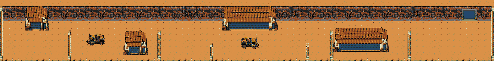
Mapa inteiro nativo. Todos os objetivos lógicos são mostrados; viewport pode ter menos. Câmera top: entrada/meio/saída (com ator em escala) 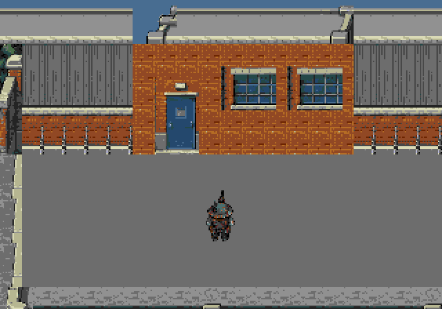
entry/top; personagem apenas referência de escala, sem HUD. 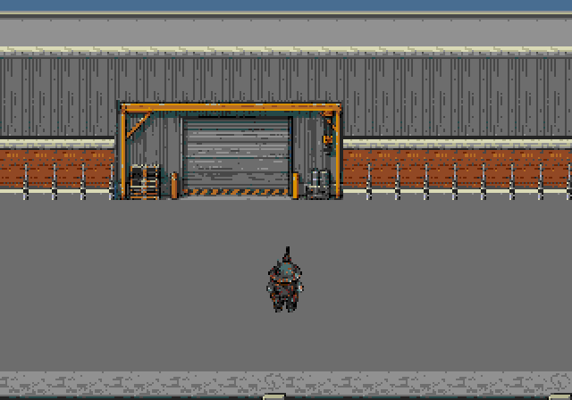
middle/top; personagem apenas referência de escala, sem HUD. 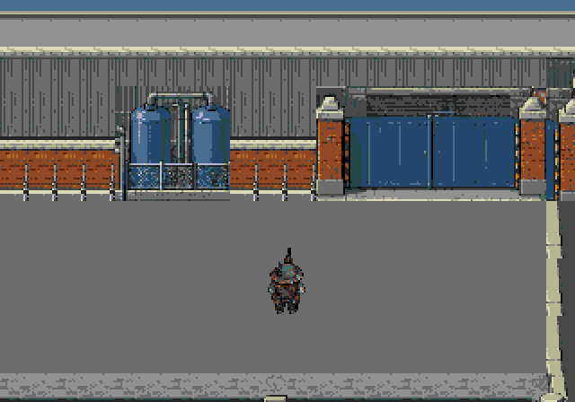
exit/top; personagem apenas referência de escala, sem HUD. Câmera center: entrada/meio/saída (com ator em escala) 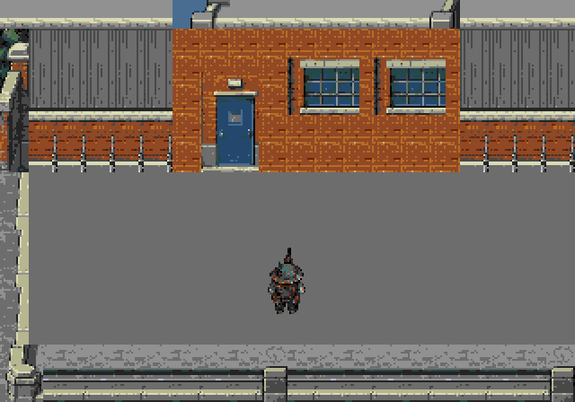
entry/center; personagem apenas referência de escala, sem HUD. 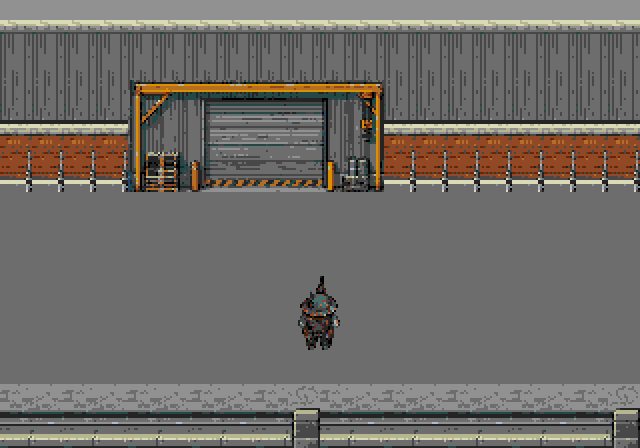
middle/center; personagem apenas referência de escala, sem HUD. 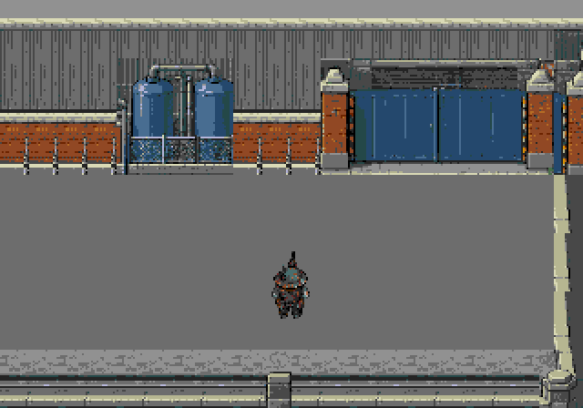
exit/center; personagem apenas referência de escala, sem HUD. Câmera bottom: entrada/meio/saída (com ator em escala) 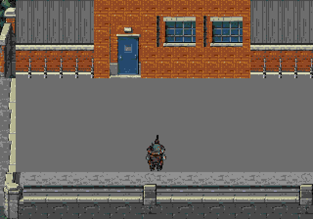
entry/bottom; personagem apenas referência de escala, sem HUD. 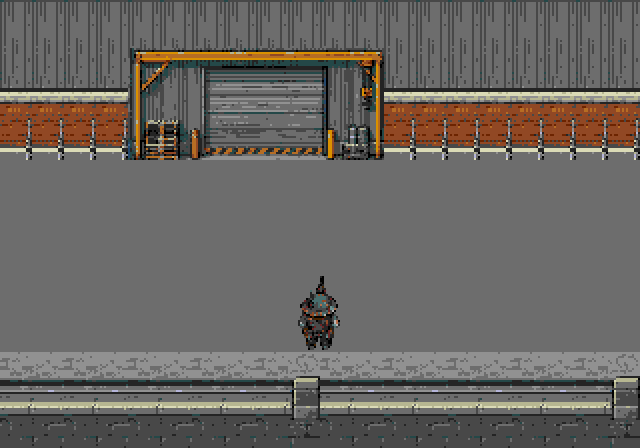
middle/bottom; personagem apenas referência de escala, sem HUD. 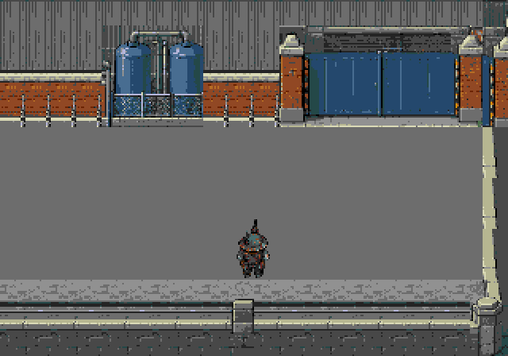
exit/bottom; personagem apenas referência de escala, sem HUD. Fase10 460tiles cenário +150estados de objetivos =610/640. Mapas: 7680bytes. Cena inteira ImageGen original
Mapa inteiro nativo. Todos os objetivos lógicos são mostrados; viewport pode ter menos. Estado destroyed 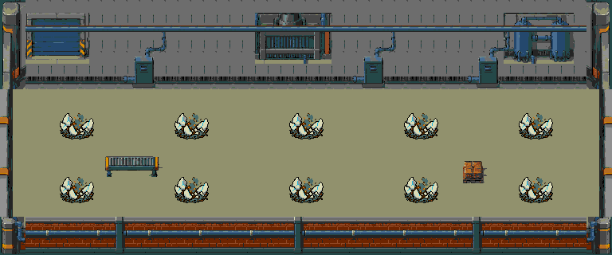
Câmera top: entrada/meio/saída (com ator em escala) 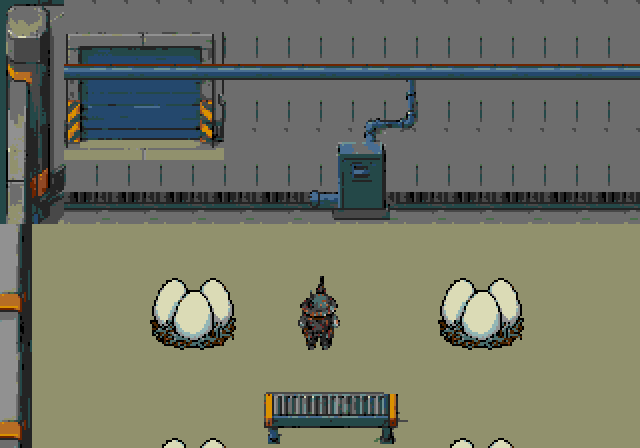
entry/top; personagem apenas referência de escala, sem HUD. 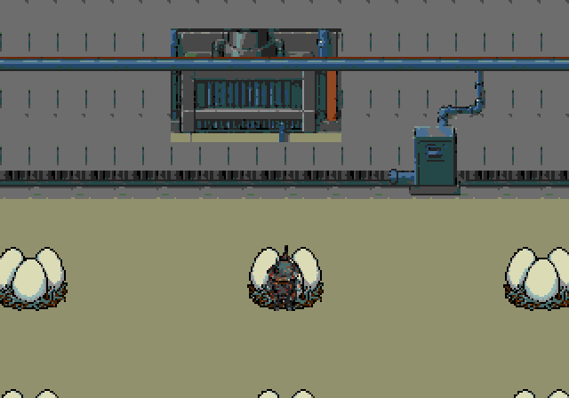
middle/top; personagem apenas referência de escala, sem HUD. 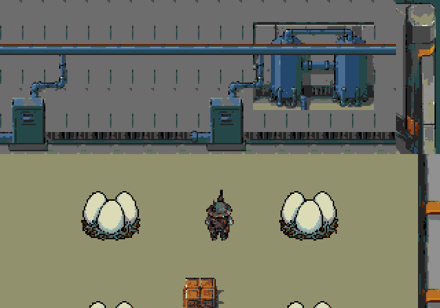
exit/top; personagem apenas referência de escala, sem HUD. Câmera center: entrada/meio/saída (com ator em escala) 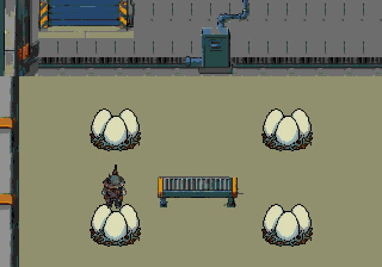
entry/center; personagem apenas referência de escala, sem HUD. 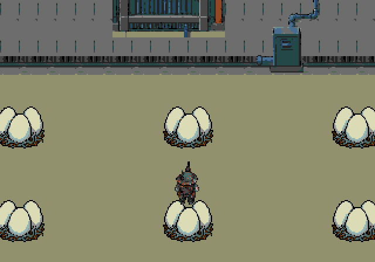
middle/center; personagem apenas referência de escala, sem HUD. 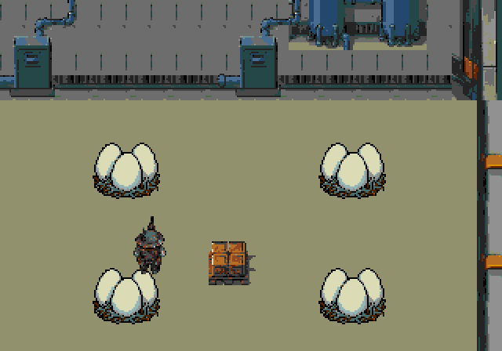
exit/center; personagem apenas referência de escala, sem HUD. Câmera bottom: entrada/meio/saída (com ator em escala) 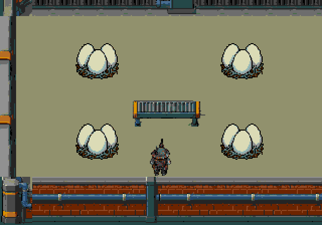
entry/bottom; personagem apenas referência de escala, sem HUD. 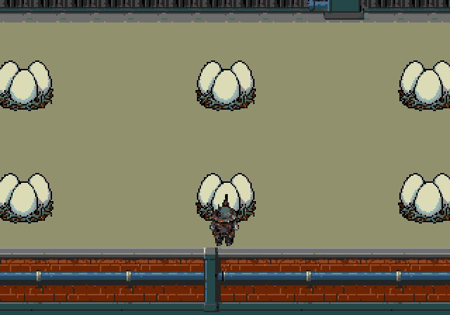
middle/bottom; personagem apenas referência de escala, sem HUD. 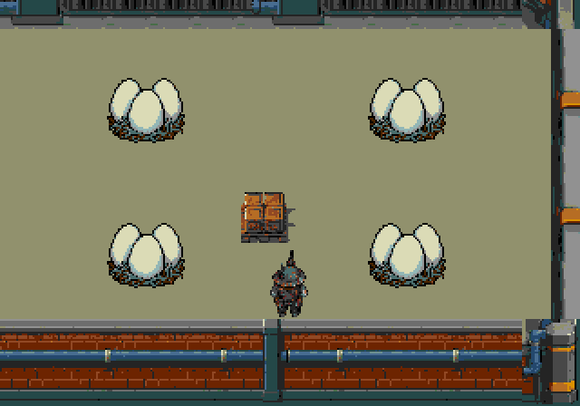
exit/bottom; personagem apenas referência de escala, sem HUD. Fase11 460tiles cenário +65estados de objetivos =525/640. Mapas: 7680bytes. Cena inteira ImageGen original
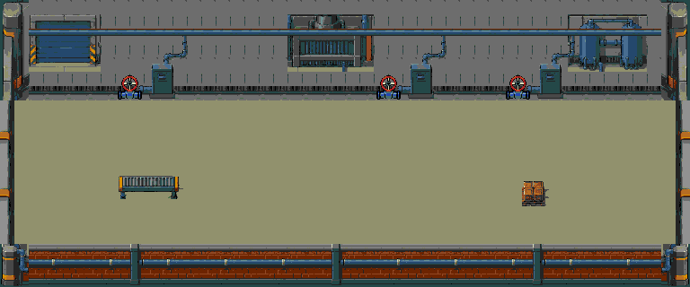
Mapa inteiro nativo. Todos os objetivos lógicos são mostrados; viewport pode ter menos. Estado open 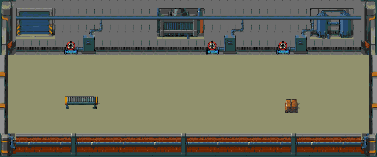
Câmera top: entrada/meio/saída (com ator em escala) 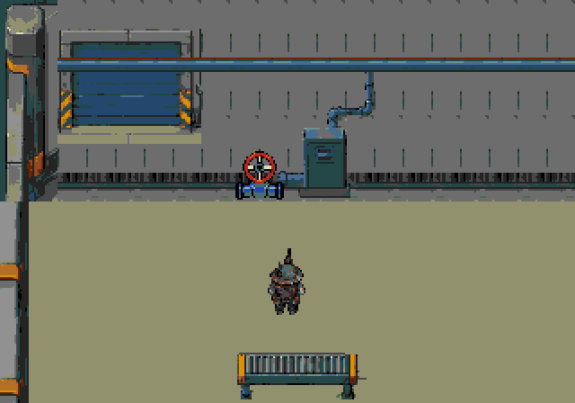
entry/top; personagem apenas referência de escala, sem HUD. 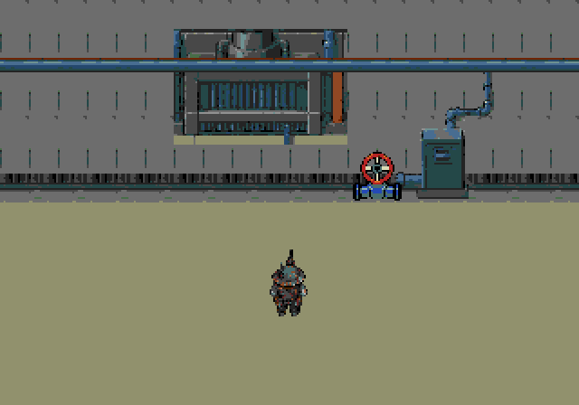
middle/top; personagem apenas referência de escala, sem HUD. 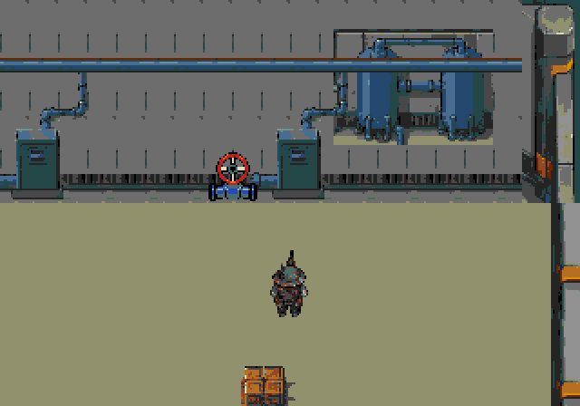
exit/top; personagem apenas referência de escala, sem HUD. Câmera center: entrada/meio/saída (com ator em escala) 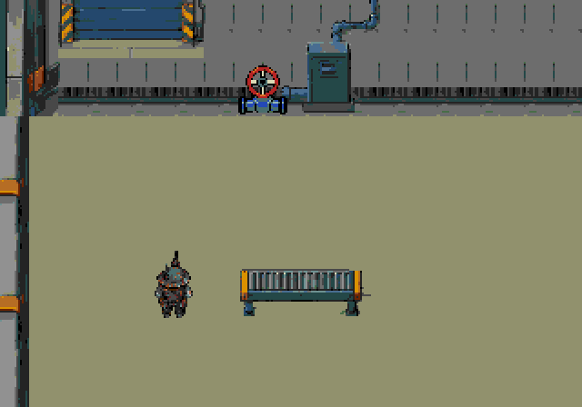
entry/center; personagem apenas referência de escala, sem HUD. 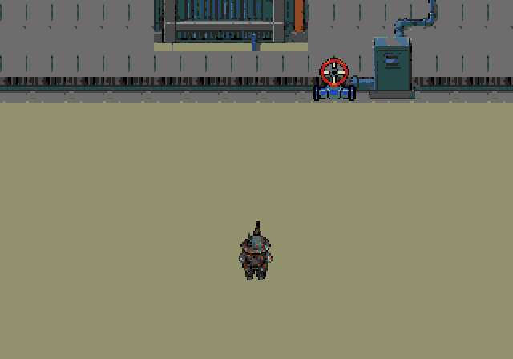
middle/center; personagem apenas referência de escala, sem HUD. 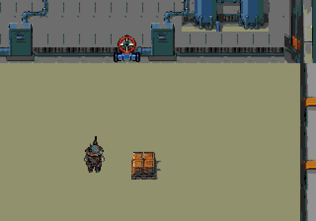
exit/center; personagem apenas referência de escala, sem HUD. Câmera bottom: entrada/meio/saída (com ator em escala) 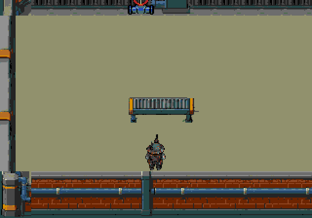
entry/bottom; personagem apenas referência de escala, sem HUD. 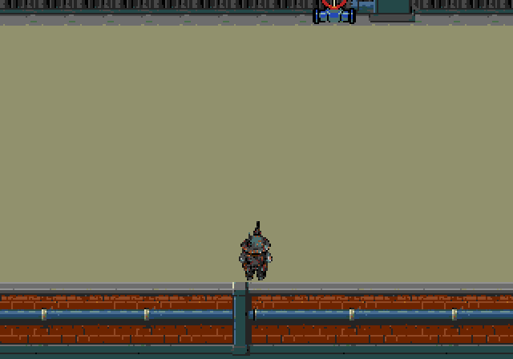
middle/bottom; personagem apenas referência de escala, sem HUD. 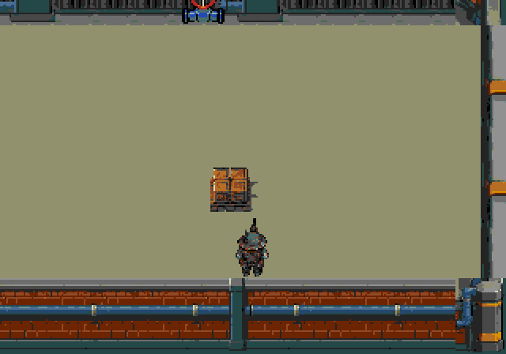
exit/bottom; personagem apenas referência de escala, sem HUD. Módulos extraídos após as cenas inteiras 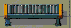
factory-conveyor 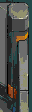
factory-corner-ne 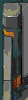
factory-corner-nw 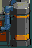
factory-corner-se 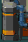
factory-corner-sw 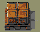
factory-crate 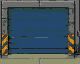
factory-door factory-floor 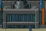
factory-furnace factory-north-plinth factory-north-wall factory-side-left factory-side-right factory-south-post 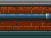
factory-south-wall factory-station-mask 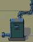
factory-station factory-supply-header 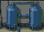
factory-tanks 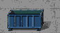
street-bin street-brick 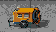
street-compressor 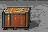
street-crate 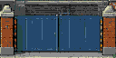
street-factory-gate 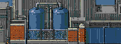
street-factory street-floor 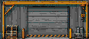
street-loading-gantry 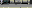
street-north-curb street-north-roof street-north-wall 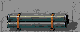
street-pipes street-roof-left street-roof-middle street-roof-right street-service-door street-side-wall-right street-side-wall street-sky street-south-corner-right street-south-corner street-south-post street-south-wall street-tank-pair street-upper-corner-right street-upper-corner street-upper-post-right street-upper-post street-warehouse street-workshop-complete street-workshop-window street-workshop